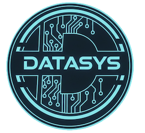

Edición de hoy · Artículos destacados
Más tecnología
Opinión & Análisis

—
Recibe cada mes la edición impresa de DATASYS Tech Review directamente en tu oficina o domicilio. Papel premium, diseño editorial de clase mundial y el análisis más profundo del ecosistema tecnológico global.
Completa tus datos y elige tu plan. Tu primera edición llegará en 5–7 días hábiles.
Sin contratos a largo plazo · Cancela cuando quieras · Datos protegidos